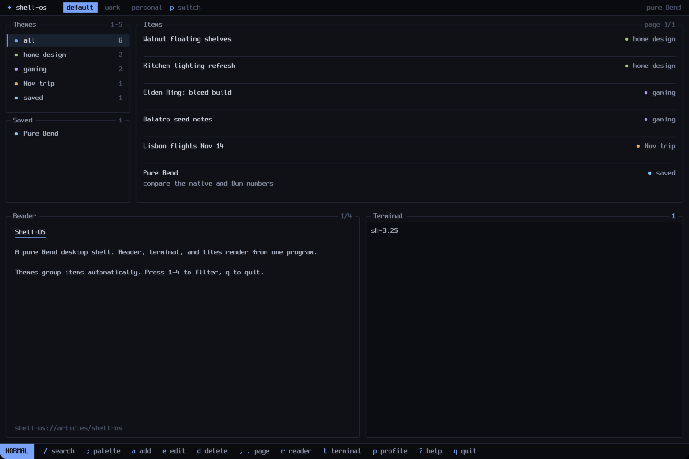
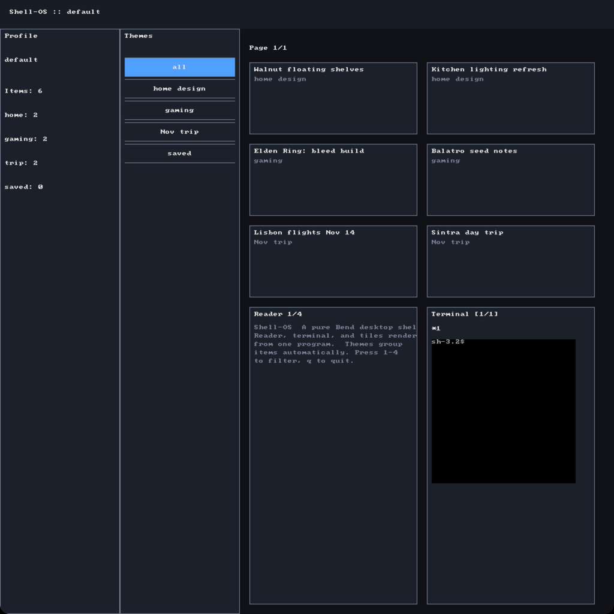
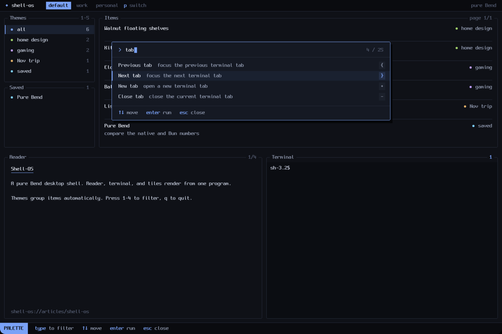
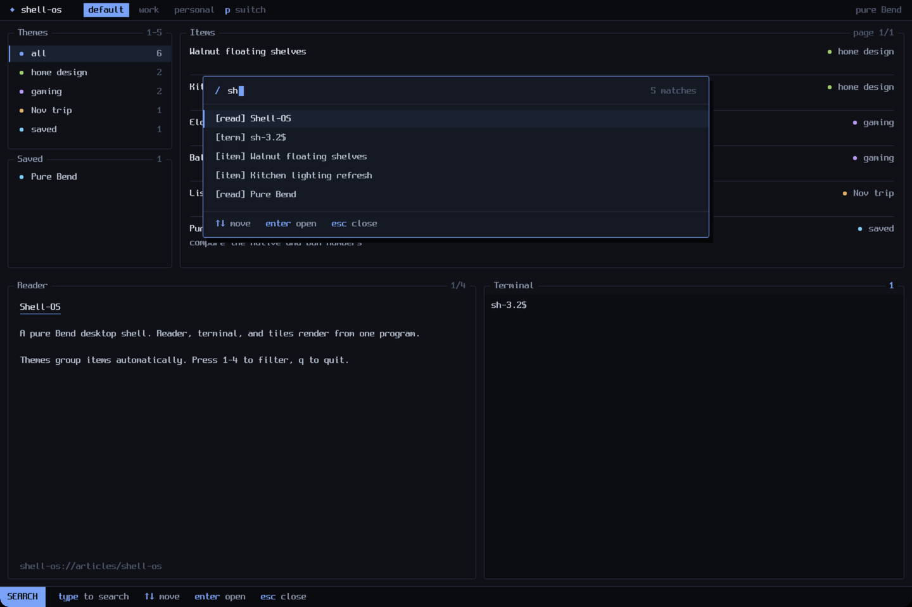
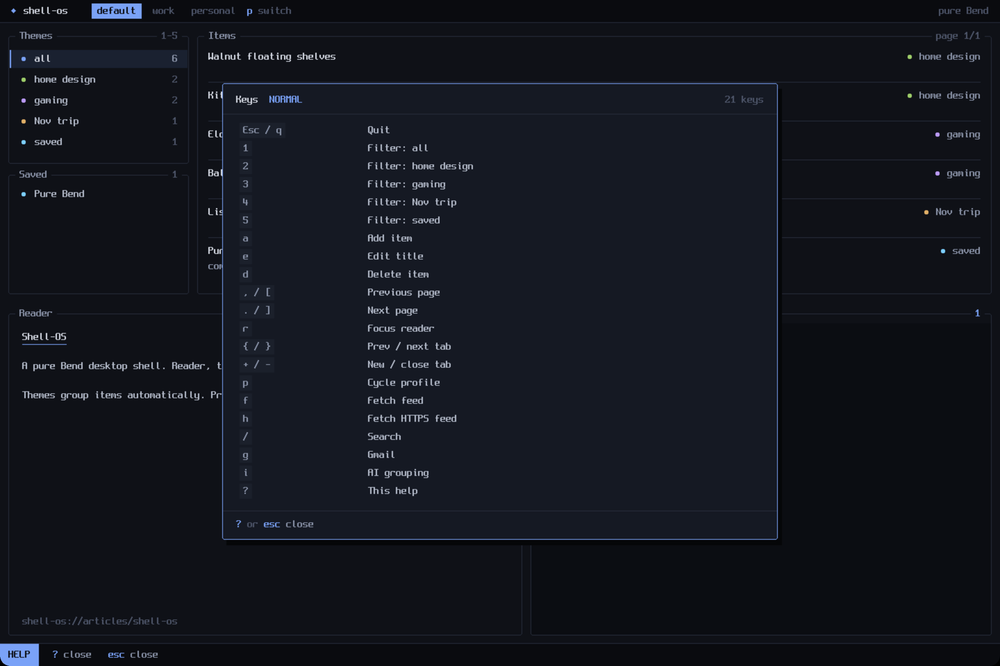
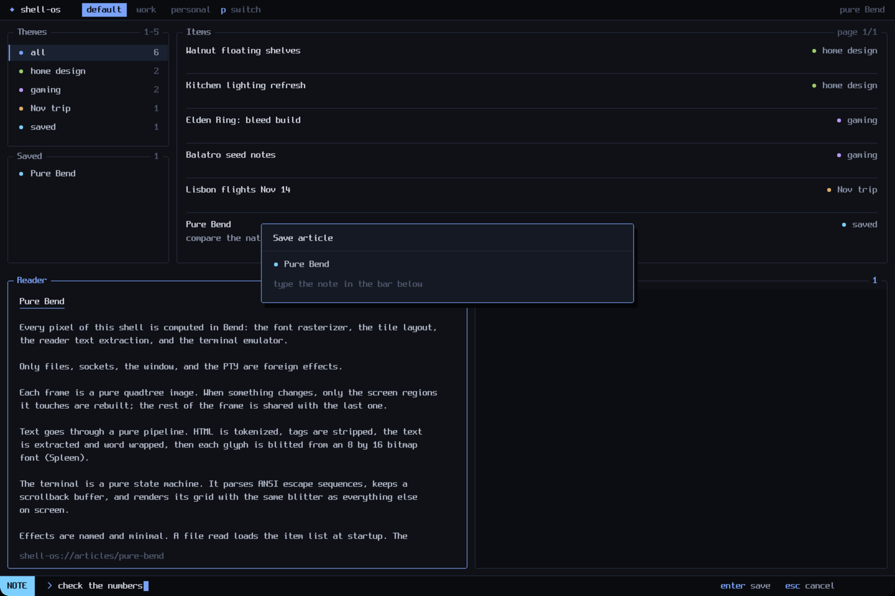
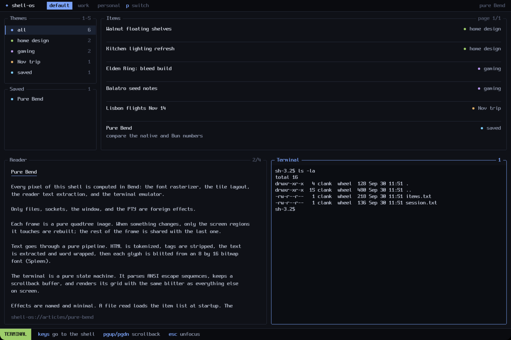

What it is
A whole desktop shell, rendered by a pure Bend program
A desktop where every pixel is computed in Bend.
The same AI app builder wrote a whole shell: terminal tabs over a real PTY, an HTML reader, a command palette, search, Gmail and AI panes. The font rasterizer, the layout and the terminal emulator are pure Bend; only files, sockets, TLS, the PTY and the window sit behind a small C seam. It arrived as a zip for a Linux VM that couldn't build it. Claude Code ported it to a Mac, found three bugs its suites never caught, and redesigned it.

Every frame is a quadtree image built by pure functions. The program asks the outside world for exactly five kinds of thing, each through a named effect with a C file behind it. Everything else is data in, pixels out.
A live /bin/sh in each terminal tab and items saved with tmp + fsync + rename, both exercised here. HTTPS with mandatory certificate checks and owner-only Gmail and AI configs are built in but were not re-run here.
Rendering, layout, font rasterization, the terminal state machine, HTML parsing, search. None of it can touch the outside world.
The package arrived with a nine-step plan for a Linux VM. Step four, the native build, needed 5 GB of free memory the VM never had: for five days its hourly status runs deferred the rebuild, so the shipped binary predated its own bug fixes.
Bend's window already has a native macOS backend and maps keys the same way on both platforms. The shell's Bend code ran as written.
Point the clang wrapper at Homebrew's OpenSSL, and replace Linux-only flock with a mkdir lock.
3.2 GB peak memory on the Mac; zero warnings after fixing four pointer-size warnings in the C seam. A 6.3 MB arm64 binary.
A new harness drives the real window: keys posted to one process, screenshots of one window, fresh working dirs, exact PIDs.
The Linux harness drove a virtual X display. On macOS it's macwin, a small Objective-C tool: find the window by PID, post keys and clicks with CoreGraphics, capture with screencapture -l.
The shell redraws only when something marks the frame as touched. Its test suites checked state: palette open, query typed, selection moved. They all passed. None of them looked at the pixels, and that is where all three bugs lived.
Typing a filter or pressing an arrow changed the palette's state, but only open and close marked the frame, so the old frame kept being shown. The builder's fix had covered open and close and stopped there.
Pressing ? opened the help overlay in state and never repainted, so in the native app it was invisible. Its suite passed 14 of 14.
Help wasn't counted as an open panel, so keys went through it: the Esc that closed help reached the main keymap and quit the app, and d would have deleted an item underneath.
All three were found by looking at real screenshots of the real window. A frame diff proves that something changed; only looking shows that the right thing changed.
"Not very pretty or clean." Two directions were mocked up at pixel fidelity on the app's own canvas with its own bitmap-font drawing; the owner picked rounded panes with titles in the border. Then: "the fonts are REALLY small." The window maps one canvas pixel to one point, so on a scaled 6K display the fix was a bigger font on a bigger canvas.


Rounded borders with titles set into them, one accent color, a color per theme, three text weights, and "…" instead of clipped text.
NORMAL, PALETTE, TERMINAL, READER: a badge and the keys that work right now. It becomes the input line when you add, edit or write a note.
Full-frame render went from 21 ms to about 11 ms. The old font walked a 1,024-entry list for every glyph row; the new one is a match.
The old tile showed a 30×30 corner of an 80×24 grid. Now the full grid shows, and the shell is told its window size.




Gmail and AI were restyled but never run live: there were no configs on this machine.
All eight suites pass, 198 checks. They still test state, not pixels: the window harness and screenshots are what catch a screen that didn't change.
Every number here is from one Apple-silicon Mac, on Bend 2.0.34 and again on 2.0.35. The Linux build path was not re-run.
The shipped report logs ten days of work on the VM, starting 20 Sep. Only what was re-run here is claimed here.
Bend 2.0.35 shipped on 3 Oct. The shell built on it with no source changes. Because shellOS is all rendering, the test that matters is the screen: same pixels, same speed.
./build.sh native succeeds on 2.0.35 in about a minute; the foreign-code verdict still lists the same 164 seam defs.
The macOS harness drives the real window: palette, search, add, quit, relaunch and reload, in fresh working dirs.
The render benchmark's 4 MB output frame is byte-identical between the 2.0.34 and 2.0.35 builds. Timings and peak memory (156 MiB) match within run-to-run noise.
Five suites passed with identical counts on 2.0.34 and 2.0.35. The other three had stopped compiling long before; their fixtures now match the current types, and all eight pass.
The three benchmarks' build recipes still named the pre-redesign font file and no longer compiled on either compiler; they now name font8x16.bend.
Three programs, one young language, one method. Each was written by an AI app builder in Bend 2 under an evidence-first discipline, then handed to Claude Code to check: reproduce every claim, attack it, profile it, fix only what is proven, and show the fix changed nothing else. Every time, the builder's own tests passed, and something real was still wrong.
The framework. A whole backend (HTTP, auth, rate limits, WAL storage, MCP) compiled from one Bend program into one binary.
The app on top. A blog CMS whose only interface is seven MCP tools, and the quadratic curve its 43 passing tests never saw.
The desktop. A single-window shell drawn pixel by pixel in pure Bend: terminal, reader, palette. Ported to a Mac and redesigned.